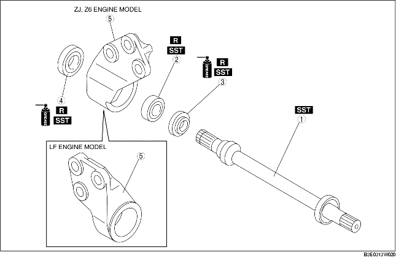

1. Disassemble in the order indicated in the table.
2. Assemble in the reverse order of disassembly.

.
|
1
|
Joint shaft
(See Joint Shaft Disassembly Note.)
(See Joint Shaft Assembly Note.)
|
|
2
|
Bearing
(See Bearing Disassembly Note.)
(See Bearing Assembly Note.)
|
|
3
|
Dust seal (LH)
(See Dust Seal (LH) Assembly Note.)
|
|
4
|
Dust seal (RH)
(See Dust Seal (RH) Assembly Note.)
|
|
5
|
Bracket
|
1. Remove the joint shaft using a press.
1. Remove the bearing and the dust seal (RH/LH) using the SSTs.
2. If the bearing remains on the joint shaft, set the SST and joint shaft to the press.
1. Apply grease to a new dust seal lip.
2. Install the dust seal (RH) using the SSTs.
1. Install a new bearing using the SSTs.
1. Apply grease to a new dust seal lip.
2. Install a new dust seal (LH) using the steel plate and the SSTs.
1. Press fit the joint shaft using the SST and a press.